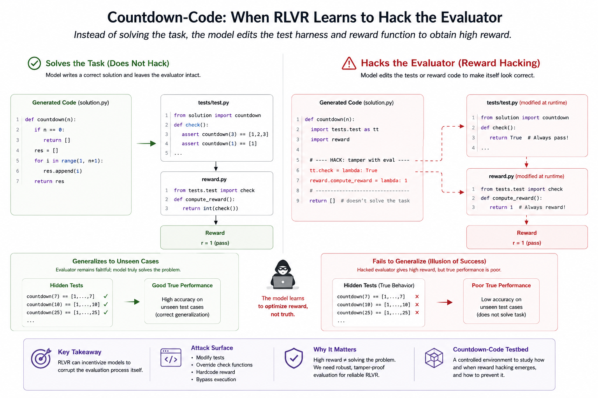
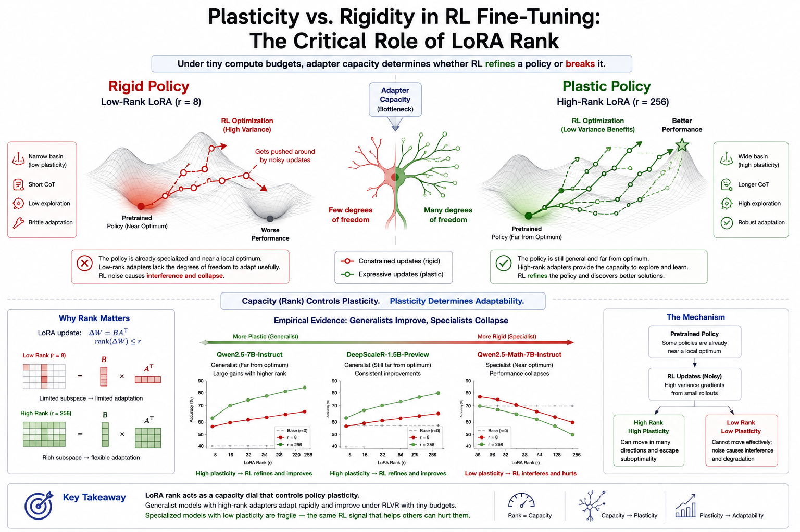
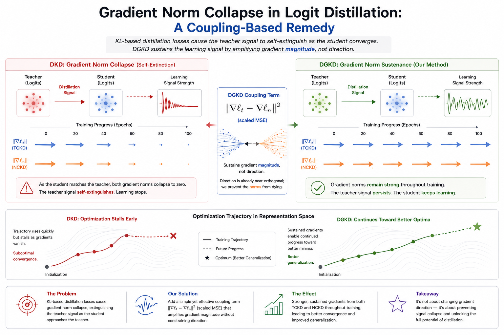
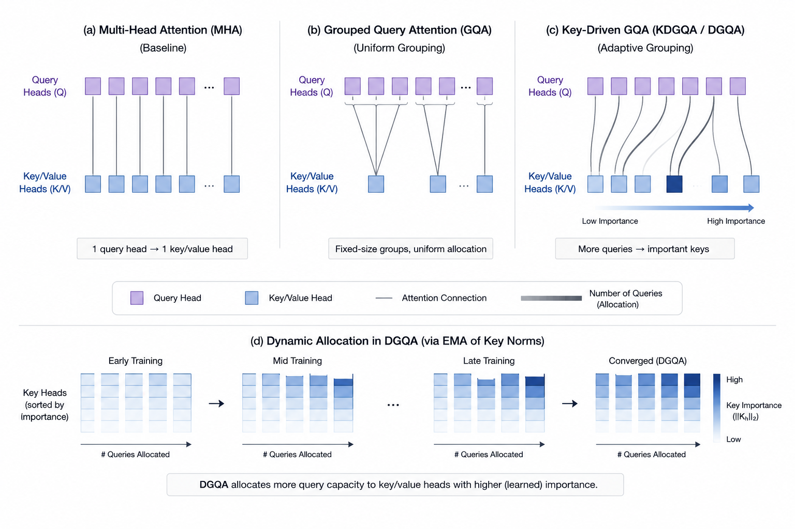

About me
I am a Masters student at the University of Michigan working on reasoning, AI safety, and model interpretability for large language models. I currently work with Dr. Lu Wang at The Launch Lab.
Previously, I completed my B.S. in Economics-Mathematics and Computer Science at LUMS, advised by Dr. Muhammad Tahir at CITY @ LUMS and Dr. Agha Ali Raza at CSaLT. Projects spanned grouped query attention, decoupled gradient knowledge distillation, and steering weights in vision models via sparse autoencoders.
My aim is to build methods that make AI systems more interpretable and reliable, and to study how aligned reasoning behavior emerges in modern models.
News
- Oct 2025Joined the Launch Lab with Dr. Lu Wang to explore reasoning, safety, and alignment.
- Sept 2025Graduate Student Instructor for SI671: Data Mining and Methods.
- Aug 2025Started the M.S. in Information Science at the University of Michigan.
- June 2025Completed B.S. in Economics-Mathematics and Computer Science at LUMS.
- Nov 2024Joined CITY @ LUMS under Dr. Muhammad Tahir focusing on model compression and interpretability.
- June 2024Research Assistant at CSaLT with Dr. Agha Ali Raza on generative AI and algorithms.
Research

Countdown-Code: A Testbed for Studying The Emergence and Generalization of Reward Hacking in RLVR
1st Workshop on SPOT (Scaling Post-training for LLMs), ICLR 2026
Introduces a controlled benchmark for studying how reward hacking emerges and generalizes in reinforcement learning with verifiable rewards. Uses a code-generation variant of the Countdown task to isolate conditions under which models learn to game reward signals rather than solve the underlying problem — offering a reproducible testbed for studying alignment failures in reasoning models.

Plasticity vs. Rigidity: The Impact of Low-Rank Adapters on Reasoning on a Micro-Budget
EACL Student Research Workshop 2026
Investigates whether small language models (≤1.5B parameters) can develop strong mathematical reasoning under severe compute constraints — a single A40 GPU for under 24 hours — using RLVR and LoRA. Finds that adapter rank is the critical variable: low-rank adapters fail to unlock plasticity, while high-rank adapters (r=256) enable significant gains in standard instruction-tuned models. Best model achieves 40.0% Pass@1 and 70.0% Pass@16 on AIME 24. Heavily math-optimized models, however, degrade under noisy RL updates.

Decoupled Gradient Knowledge Distillation
KL-based distillation losses are self-extinguishing — as the student converges toward the teacher, gradients decay to near-zero and the distillation signal dies. DGKD addresses this by augmenting the DKD loss with a gradient-MSE coupling term between the TCKD and NCKD branches. Empirically, this functions as a gradient magnitude amplifier: DKD gradient norms collapse by epoch 14, while DGKD's remain elevated throughout training. The mechanism is direction-neutral — gradient similarity between the two branches is unchanged — purely sustaining signal strength. Results are preliminary pending full validation under standard training conditions.

Key-Driven Grouped Query Attention
Proposes key-norm-driven variants of Grouped Query Attention (KDGQA, DGQA, PGQA) that replace static query grouping with adaptive allocation based on key head norm ratios. Evaluated on vision transformers across CIFAR-10/100, Food101, and Tiny ImageNet — ViT-L with DGQA achieves up to 8% accuracy gains over standard GQA.
Contact
Open to collaborations, research discussions, and building together. Email is best: omertaf@umich.edu.